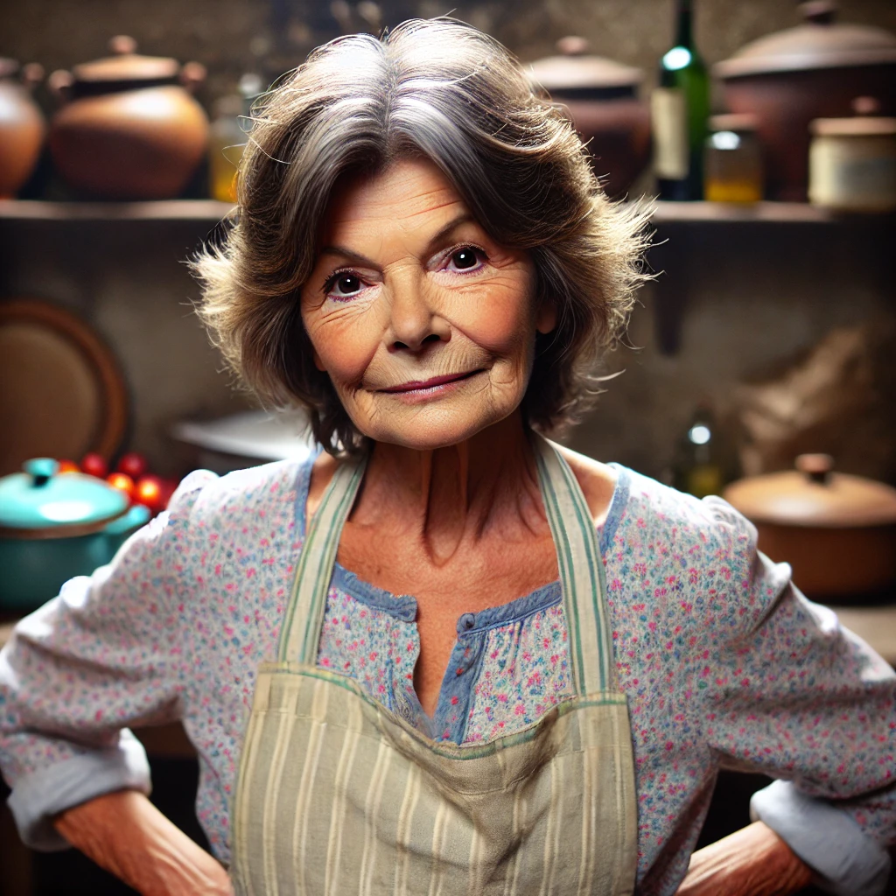

Se siete alla ricerca di piatti elaborati, decorazioni esagerate e camerieri che vi chiamano “signore e signora”, forse avete sbagliato posto. Da "Dalla Lella" facciamo le cose semplici, ma fatte bene: qui si mangia come a casa, ma senza che dobbiate lavare i piatti.

La cucina ligure è come i liguri: diretta, senza inutili complicazioni, ma piena di carattere. Usiamo solo ingredienti freschi, perché il pesto si fa con il basilico vero, non con quello del supermercato. Il pesce? Quello che ci porta il mare, non quello scongelato.
Volete scoprire il vero sapore della Liguria? Sedetevi, fate un respiro profondo e preparatevi a una cena che vi farà rimpiangere di non essere nati qui. Ah, e ricordatevi che il pane si paga.
"Dalla Lella" – Cucina ligure verace, col giusto tocco di tirchieria!